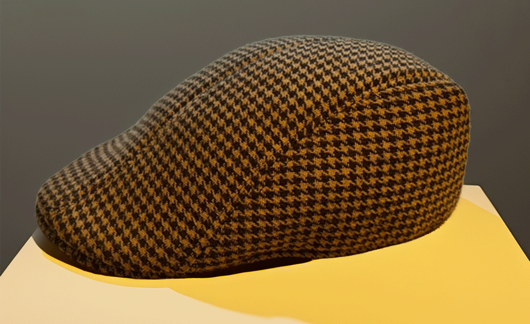

One of the most valuable and cherished items in my collection is my Houndstooth tweed flat cap. I bought it during a memorable trip to Muscat, and it has since become the cap I wear most of the time. What makes this cap so special is not just its classic design but also its incredible ease of carrying around. Its compact size and lightweight fabric mean I can easily pack it in my bag without any hassle, making it my perfect travel companion.
The cap’s houndstooth pattern and warm color tones seamlessly match the majority of my outfits, especially those in earthy and autumnal shades. It adds a touch of timeless style without overpowering my look, making it a go-to for casual and semi-formal occasions alike.
What truly elevates its value to me is the sentimental connection. This cap was a gift from my brother during my Muscat trip, making it not just a fashion statement but a symbol of our bond and memories shared during that travel. It’s undoubtedly the most treasured piece in my collection.